Investment operating platform
AIRIA
Cloud-hosted environment for portfolio oversight, benchmark management, trading support, risk analysis, tax workflows and reporting. The core of the firm's trading technology since July 2025.
New York · United States
Computer, AI and Technology Scientist and Engineer
Leads AI platform engineering at GenTrust, a New York wealth firm with nearly $6 billion in assets. Architect of AIRIA and AURA.
Hired to fix code. Built an operating system instead.
Vipul designs and builds production systems end to end. At GenTrust, a registered investment adviser managing nearly $6 billion, a legacy modernization assignment became AIRIA and AURA: a secure operating environment that now connects investment, trading, research, reporting, advisory, compliance and operational work across the firm.
Front end, back end, APIs, mobile, dashboards, pipelines, security, deployment and the product design. Built in roughly four months, on an initial model budget of about fifty dollars a month.
In the news
“I didn't come to DSI with all the answers. But I left with the ability to build something from start to finish.”
Data Science InstituteThe launch announcement for the AI-native wealth platform built on GenTrust's AIRIA. Vipul is named in the launch photo.
Read the releaseAt a glance
Vipul H. Harihar, also known as Vipul Rules, is a U.S.-based computer, AI and technology scientist and engineer specializing in artificial intelligence and data science. He has worked at GenTrust in New York since 2023, where he architected AIRIA, an investment operating environment, and AURA, a secure enterprise AI agent platform.
The work
The platforms below are in daily use across GenTrust.
01 / 06
Investment operating platform
Cloud-hosted environment for portfolio oversight, benchmark management, trading support, risk analysis, tax workflows and reporting. The core of the firm's trading technology since July 2025.
Enterprise AI assistant and application builder
A secure agent platform, not a thin wrapper on a public model. Agent routing, context assembly, memory, guardrails, permissions and auditability, integrated with Salesforce, Addepar, documents and portfolio data.
Meeting intelligence
Client-side speech to text, secure summaries, action items and CRM integration. Post-meeting admin work finished in minutes.
Concierge analytics
Forecasting, dashboards and advisor-facing insight, designed for quick reading and immediate follow-through.
Research and reporting
PDF, Excel, research and password-protected documents turned into structured summaries, extracted data and role-specific output.
Quantitative tooling
Flask-based research and backtesting workflows with high-frequency data refresh and micro-hedging experimentation.
Vipul authored the firm's agent review framework: access delta review, action and identity review, data use and third-party review, restricted-data controls, lifecycle recertification, and pre-production testing with redacted data, including prompt injection and unauthorized access scenarios.
“They brought me in to clean up legacy systems. What started as maintenance turned into a complete reinvention.”
Columbia Data Science Institute, September 2025
“I wanted to make something people actually want to use.”
Vipul H. Harihar
Experience
Projects

Encrypted, offline-first healthcare application for 79 pediatric cardiac patients.
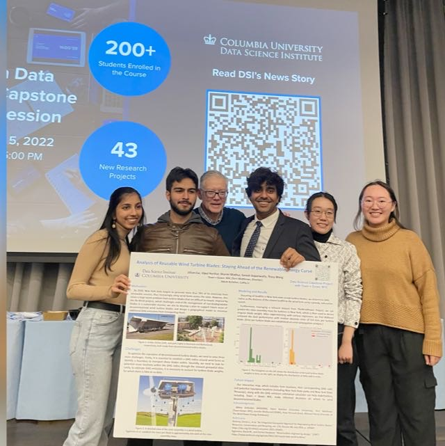
Geospatial machine learning for the carbon impact of 70,800 decommissioned blades. Delivered to NYC DDC.
Real-time object detection in the browser across 90 classes, using TensorFlow.js and COCO-SSD.
Camera-based emotion recognition driving music recommendation, built at Columbia.
Music search, rapid-sequence DJ mode, virtual mixing, pitch play and track recording.
Machine learning imaging platform for potholes and accident risk, with map severity and nearby alerts.
In production
Not a prototype and not a demo. The platforms run every day across investment, trading, advisory, compliance and operations teams.
Capabilities
Python. Java. JavaScript. SQL. R. Bash. C and C++. HTML and CSS.
Anthropic and OpenAI APIs. Agent workflows. Retrieval and context systems. NLP. TensorFlow. PyTorch. Keras. scikit-learn. XGBoost. Computer vision.
Flask. Spring Boot. React. Angular. Node.js. REST APIs. Mobile integration.
AWS EC2, S3, RDS and CloudFormation. Azure. BigQuery. Docker. CI and CD. Red Hat OpenShift. Monitoring.
ETL pipelines. Spark. Kafka. Hadoop. MySQL. NoSQL. DB2. Power BI. Tableau. Cognos.
Distributed systems. Microservices. Role-based access. PII masking. Zero Data Retention. Audit logging. Secrets management.
Education
Master of Science, Data Science
Bachelor of Technology, Computer Science and Engineering
Recognition
Credentials
26 Microsoft, Google and IBM badges verified on Credly, and six Aspiring Minds certificates.
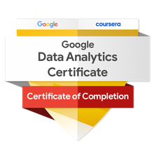
Google Data Analytics Professional Certificate Microsoft Certified: Azure Fundamentals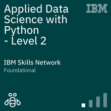
Applied Data Science with Python, Level 2 Big Data Foundations, Level 2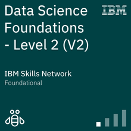
Data Science Foundations, Level 2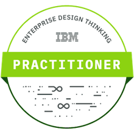
Enterprise Design Thinking Practitioner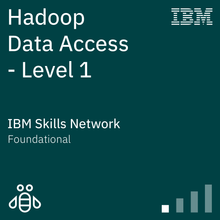
Hadoop Data Access, Level 1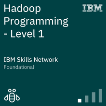
Hadoop Programming, Level 1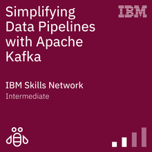
Simplifying Data Pipelines with Apache Kafka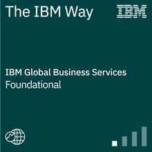
The IBM Way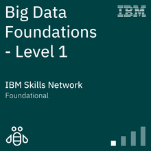
Big Data Foundations, Level 1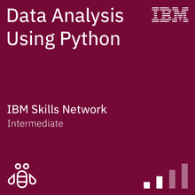
Data Analysis Using Python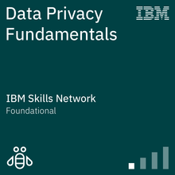
Data Privacy Fundamentals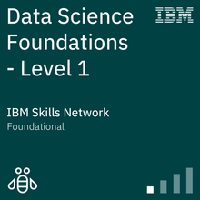
Data Science Foundations, Level 1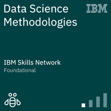
Data Science Methodologies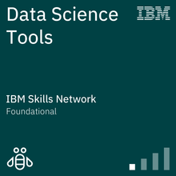
Data Science Tools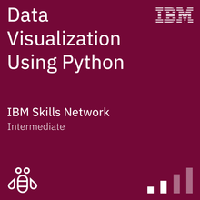
Data Visualization Using Python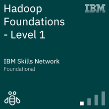
Hadoop Foundations, Level 1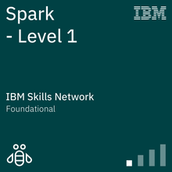
Spark, Level 1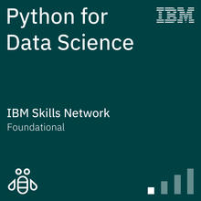
Python for Data Science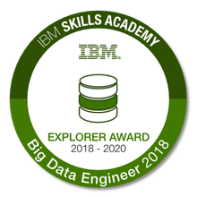
Big Data Engineer, Explorer Award 2018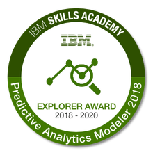
Predictive Analytics Modeler, Explorer Award 2018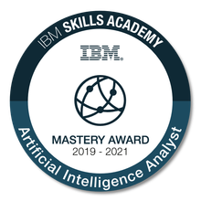
Artificial Intelligence Analyst, Mastery Award 2019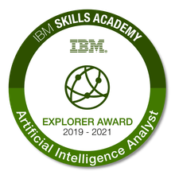
Artificial Intelligence Analyst, Explorer Award 2019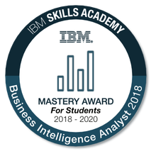
Business Intelligence Analyst, Mastery Award for Students 2018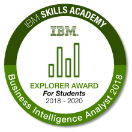
Business Intelligence Analyst, Explorer Award for Students 2018Every product people love runs on systems they never see.
Quietly building what runs underneath.
Vipul H. Harihar · Computer, AI and Technology Scientist and Engineer
Contact
Columbia Data Science Institute · September 2025
When Vipul Harihar, MS 2023, was hired by GenTrust, a wealth management firm with offices in New York, Miami and Puerto Rico, the expectations were straightforward: clean up code, support internal systems and help modernize a traditional trade operation.
But when company leadership asked if he could do something with AI, he took it as a serious engineering challenge. Four months later he had designed and built an AI-powered proprietary operating system that integrates with internal and third-party software, and it is now the core of the firm's trading technology platform.
The platform, launched in July 2025, uses the same kind of language model behind tools like ChatGPT, adapted into a secure system built for financial operations. Many AI tools are unusable in wealth management given their tendency to hallucinate and the risk that user data could be shared or used to train models. Harihar built a custom system that turns thousands of internal documents, workflows and compliance rules into information the model can draw on, without sharing any data.
He also reduced hallucinations by limiting what the model is asked to do. The platform operates within tight boundaries and, unlike most language models, asks clarifying questions when it is unsure.
Perhaps most remarkable: Harihar built the entire system himself. Front end, back end, mobile integration, dashboards, data pipelines and the product's visual design. The total development budget was fifty dollars a month, covering access to the language model API.
“I didn't come to DSI with all the answers. But I left with the ability to build something from start to finish. Columbia teaches you how to operate without a fixed blueprint.”